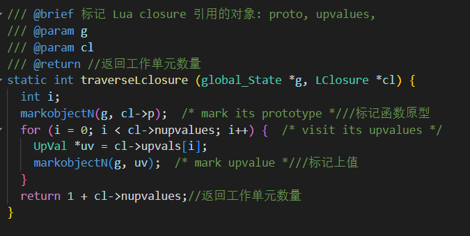
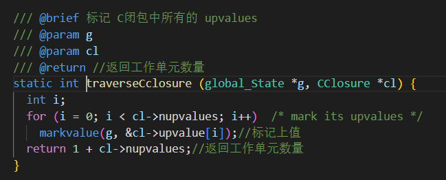
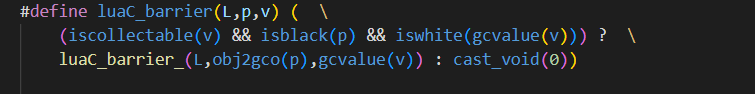
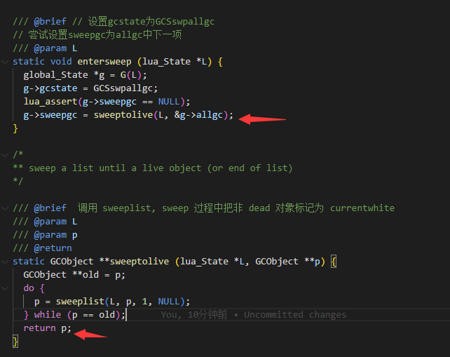

GC由来简介
c,c++的话基本都是手动管理内存,优点是效率很高,毕竟不需要去找出那些是垃圾,需要被清理这种逻辑处理,也不需要在gc清理的时候,把主线程暂停,等等操作造成卡顿,但是这种手动管理的也有一定的问题,那就是内存碎片,还有内存重复复用,所以会利用内存池管理这种技术来尽量规避这种情况
比如不使用内存池分配技术,只使用Malloc,free申请空间就很容易造成如下图的内存碎片
内碎片
-
内碎片是已经被分配出去的内存[
进程已经拿到手上了],但是进程已经利用不上了 -
如下图,当时进程我需要申请了
14KB的内存,然后因为linux伙伴算法导致返回了16KB内存,因为伙伴算法是按接近最大的2的幂返回内存空间,导致了2KB的冗余,因为这2KB非常小,很有可能内部进程使用不到,如果一直这样请求,就会导致了很多细小的不连续的内部休闲空间[碎片],当内部进程需要分配一大片连续的内存的时候,即使有很多细小的空间组合起来能大于需要申请的空间,但是因为不连续也就无能为力,不能满足要求,这样就造成了内碎片
外碎片
-
外部碎片指的是还没有被分配出去[
进程还没有拿到手],但由于太小了无法分配给申请内存空间的新进程的内存空闲区域。 -
主要原因还是频繁的申请释放导致了外碎片的存在
如下图我开始申请了
16KB的资源,然后又申请了16KB的,这个时候把我第一块的16KB给free掉,他就不属于任何进程,然后进程又来了许多个请求,一直需要18KB的内存,因为第一块只有16KB,而且因为伙伴算法的释放规则是相邻的地址才能进行合并释放,但是第2块内存一直被进程占着,所以第一块和第二块也合并不了,一直利用不上,导致了外碎片的存在
为了解决外碎片linux使用了伙伴算法
为了解决内碎片linux使用了slab算法,其实slab算法内部实现就是一个内存池逻辑结构
利用上面的办法虽然对内存的管控已经几乎完美,但是因为还是程序员直接内存裸操纵,还是难以避免开发的时候,造成内存的崩溃,野指针,内存泄露,溢出,各种异常问题,于是为了解决这些问题,同时提升开发效率,不用程序员太关心内存处理,于是就有了现在的GC机制[智能指针是另外一回事]
-
现在有了
GC机制,但是内部没有合理的回收机制释放管理这些内存空间,比如如果因为申请和释放规则的不合理,一直申请内存,缓慢释放内存,就有可能造成像人一样吃的太饱,撑的不行,导致人思维缓慢(垃圾不需要内存过多,机器查找需要的内存查找不过来),甚至撑死(再也没有内存申请挂了撑死的时候不一定会产生coredump文件)题外话为什么不一定产生
coredump文件>`dump`文件只有在程序崩溃时才会生成,如果程序没有奔溃,那么可能是如下情况导致 > >主要是因为`linux`有一个叫做`OOM-killer(Out Of Memory killer)`的机制,`OOM killer`会 在系统内存耗尽的情况下触发,选择性的干掉一些进程,以求释放一些内存 > >当发生这种崩了,但是没有产生`coredump`的情况,可以去系统日志文件`/var/log/messages`看看里面 有没有相关日志记录,你是因为被`OOM-killer`机制给杀掉了进程
总之一句话来说:GC主要解决的就是内存过多,怎么合理回收垃圾内存的这些事儿
GC怎么回收内存
LuaGC,java gc等等其他语言GC发展历史就不详细描述了,主要还是讲讲Lua5.4GC回收原理
主要有两种一种是分代GC,一种是增量GC
能被GC回收的对象
union GCUnion {
GCObject gc; /* common header */
struct TString ts;//字符串
struct Udata u;//用户数据
union Closure cl;//闭包
struct Table h;//表
struct Proto p;//函数原型:存放函数字节码信息
struct lua_State th; /* thread *///线程
struct UpVal upv;//上值
};
关于回收对象更详细的一些内容在这里就不详细的叙述了,想要了解的可以去我的博客下面地址了解
颜色处理
从上图中我们可以看出lua为了效率和内存着想用的是一个字节8个bit位之间的相互作用来标识颜色,和分代GC的年龄情况
颜色bit位索引
| 颜色 | 简介 | 宏运算 | 二进制 | 注解 |
|---|---|---|---|---|
| WHITE0BIT 3 | 白0 | bitmask(3) | 1000 | bit第3位设置成1 |
| WHITE1BIT 4 | 白1 | bitmask(4) | 10000 | bit第4位设置成1 |
| BLACKBIT 5 | 黑色 | bitmask(5) | 100000 | bit第5位设置成1 |
| FINALIZEDBIT 6 | 用于标记userdata | bitmask(6) | 1000000 | bit第6位设置成1 |
| WHITEBITS | 白色 | bit2mask(WHITE0BIT, WHITE1BIT) | 11000 | bit第3,4位设置成1 |
-
为啥
lua5.4要把白色分成两个标识呢,主要是因为如果对象在GC标记阶段之后创建对象,这个时候假如只有一个白色标识位,那么新创建的对象就会设置成白色,设置成功以后接下来到了回收阶段,因为白色是表示可回收的,那么新创建的对象会被认为没有引用而被删除了,这个逻辑肯定是不对的,不合理是的 -
所以为了解决这种不合理情况
lua创造了白0白1两种状态来进行乒乓切换,其实也就是当前白和非当前白状态的乒乓切换 -
特别注意并没有固定设置
白0就是当前白,白1就是非当前白,是不是当前白是由当前GC使用的白色是啥决定 -
当
GC来到了回收阶段的时候,如果发现对象标识的颜色不是当前白,那么就会认为是没有引用而直接回收,而刚标识阶段和回收阶段之间创建的对象是当前白,就不会参与这次``GC回收,而到下一次GC回收才回收掉,毕竟因为乒乓切换,当前白到下一次GC`也会变成其它白状态
颜色bit位检测
iswhite(x) 是不是白色
如果bit位第 3,4位中任意一位是1那么就认为他是白色标识
isblack(x) 是不是黑色
如果bit位第5位是1,那么就认为是黑色标识
isgray(x) 是不是灰色
如果bit位第3,4,,5位都是0,那么就认为是灰色标识
tofinalize(x)是不是标识了userdata
如果bit位第6位是1,那么就认为标识了userdata,注意并没有红色颜色这个标识,只是我为了区分其他颜色涂上的
主要还是userdata类型不同于其他类型,用户可以自己传入数据,设置gc元方法,自定义释放内存,所以 当 userdata 确认不被引用,则设置上这个标记,后面统一管理释放资源
黑色,白色位控制
注意到白色位是乒乓效应的,也就是3,4号位是互斥状态
otherwhite(g) 非当前白
宏公式((g)->currentwhite ^ WHITEBITS)
表示非当前GC将要回收的白色类型 比如
-
如果
(g)->currentwhite是10001000 ^ 11000 = 10000 -
如果
(g)->currentwhite的值是10000的话,10000 ^ 11000 = 1000
结果正好相反
luaC_white(g) 当前白
宏公式cast_byte((g)->currentwhite & WHITEBITS)
表示得到当前的要回收的白色类型 比如
-
如果
(g)->currentwhite是10001000 & 11000 = 01000,1000 & 11000还是1000 -
如果
(g)->currentwhite是1000010000 & 11000 = 10000,10000 &11000还是10000
changewhite(x) 改变当前白色位
宏公式((x)->marked ^= WHITEBITS)
-
比如如果现在
((x)->marked是101000这个时候执行了一下
changewhite(x)101000 ^ 11000 = 110000因为是异或逻辑-
0和任何数异或是本身 -
1和任何数异或是他相反的bit位
所以我们得到了如下图结果
-
-
比如如果现在
((x)->marked是110000这个时候执行了一下
changewhite(x)110000 ^ 11000 = 101000因为是异或逻辑-
0和任何数异或是本身 -
1和任何数异或是他相反的bit位
所以我们得到了如下图结果
-
nw2black(x) 设置成黑色
当bit 3,4位都是0然后就可以设成把5号位设置成黑色了
颜色是否可被回收
| 颜色 | 状态 | 当前GC回收阶段是否回收 |
|---|---|---|
| 当前白 | 下次GC回收状态 | 不回收 |
| 其他白 | 回收状态 | 回收 |
| 灰色 | 当前对象为待标记状态 | 不回收 |
| 黑色 | 当前对象为已标记状态 | 不回收 |
年龄处理
年龄bit位索引
age使用的位mask,age只使用了marked的0,1,2位置
青年对象
| 宏定义 | 二进制 | 注解 |
|---|---|---|
| G_NEW 0 | 000 | 本次cycle创建的新对象(没有引用任何old对象) |
| G_SURVIVAL 1 | 001 | 当前gc存活下来的对象 |
| G_OLD0 2 | 010 | 当前gc循环被barrier forward的节点,如果被插入的节点为isold()为true的节点 |
老年对象
| 宏定义 | 二进制 | 注解 |
|---|---|---|
| G_OLD1 3 | 011 | 活过了一次完整的gc |
| G_OLD 4 | 100 | 活过了两次完整的gc,标记为G_OLD,不再被访问 |
| G_TOUCHED1 5 | 101 | old节点被插入新节点 |
| G_TOUCHED2 6 | 110 | G_TOUCHED1节点经过一次完整的gc还没有新的节点插入 |
getage(o) 获取年龄
宏公式((o)->marked & AGEBITS)
主要是利用了和#define AGEBITS 7 也就是二进制111的与运算得到当前的年龄毕竟与运算逻辑是
1 & 1 = 10 & 1 = 0
等价于留下了低3位的数据
setage(o,a) 设置年龄
宏公式((o)->marked = cast_byte(((o)->marked & (~AGEBITS)) | a))
~AGEBITS 等价于低3位是000 其他位都是1 比如64位系统得到结果是这样
1111111111111111111111111111111111111111111111111111111111111000
(o)->marked & (~AGEBITS)) 进行与运算以后等价于高3位以上都会留下来毕竟与运算逻辑是
1 & 1 = 10 & 1 = 0
(o)->marked & (~AGEBITS)) | a
然后和a进行或运算,这个就等价于进行或运算的组合逻辑了 毕竟或运算逻辑
-
0 | 0 = 0 -
0 | 1 = 1 -
1 | 0 = 1 -
1 | 1 = 1
changeage(o,f,t) 改变年龄
宏公式check_exp(getage(o) == (f), (o)->marked ^= ((f)^(t)))
-
从
f变到t前提是o的年龄要等于f举个例子changeage(curr, G_TOUCHED1, G_TOUCHED2)如果getage(o) == (f)那么marked的低3位是101 101^=(101^110),101^=011 o->marked=110也就等价与o->marked从101变到了110 -
这个公式是
lua作者利用对同一个值进行两次异或等于本身原理来达到这样的效果-
0 ⊕ x = x -
1 ⊕ x = x'(x'表示取反) -
x ⊕ x = 0 -
所以有
y ⊕ x ⊕ x = y
-
增量GC
经过前面的叙述,我们能知道Lua 增量GC使用的是4色标记清除算法
当前白:表示本轮GC不会被回收的对象,也是对象开始创建时候的初始状态其他白:表示本轮GC要被回收的对象,这个白一般都是上轮GC留下来的旧白,也可以认为这个白已经没有引用任何对象了灰色:表示本来GC对象引用的其他对象还没有被访问到,需要进行扫描标记黑色:表示本来GC对象引用的其他对象都已经被访问过了
增量GC时候存放GCobject的链表
lua本身有一个global_State的全局状态机,这里存着需要被GC流程处理的数据,大概如下所示
typedef struct global_State {
GCObject *allgc;
GCObject **sweepgc;
GCObject *finobj;
GCObject *gray;
GCObject *grayagain;
GCObject *weak;
GCObject *ephemeron;
GCObject *allweak;
GCObject *tobefnz;
GCObject *fixedgc;
struct lua_State *twups;
}
| 链表 | 作用 |
|---|---|
| allgc | 存放待GC对象的链表,所有对象创建之后都会放入该链表中 |
| sweepgc | 由于回收阶段不是一次性全部回收这个链表的所有数据 所以使用这个变量来保存当前回收的位置,下一次从这个位置开始继续回收操作 |
| finobj | 存放所有带有析构函数(__gc)的GC obj链表 |
| gray | 存放灰色节点的链表 |
| grayagain | 存放需要一次性扫描处理的灰色节点链表,也就是说,这个链表上所有数据的处理需要一步到位 不能被打断 |
| weak | 存放弱值的链表 |
| ephemeron | 键值对(pair),键是弱引用,但键对值的 mark 有如下影响如果键可达 (reachable),则 mark 其值如果键不可达,则不必 mark 其值主要用来解决弱表的循环引用问题 弱引用 (weak reference):可以访问对象,但不会阻止对象被收集弱表 (weak table):键或(和)值是弱引用 |
| allweak | 具有要清除的弱键或弱值 或者弱键弱值同时存在的表 |
| tobefnz | 所有准备终结的userdata对象 |
| fixedgc | 永远不回收的对象链表, 如保留关键字的字符串, 对象必须在创建之后马上 从 allgc 链表移入该链表中, 用的是 lgc.c 中的 luaC_fix 函数 |
| twups | 所有带有open upvalue 的 thread 都会放到这个链表中这样提供了一个方便的遍历 thread 的途径并且排除掉了没有 open upvalue 的 thread |
增量GC流程
上图是增量GC的简易流程图,每个步骤关键的函数,我也画在了上面,大家先初步了解,能有一个大概印象,接下来我将详细的讲解里面的弯弯绕绕,细节部分
新建对象阶段
从上图我们可以看到
- 在创建一个新的
GC类型的对象的时候,它都会把当前GC的颜色标识设置成当前白 - 并且还会把用头插法的方法,将新创建的对象 放入全局状态机的
allgc链表当中,这其实也透露出因为用了头插法,所以我们在GC扫描的时候能优先扫描新创建的对象,需要接下来被GC待扫描处理的对象都会存在这个里面
GC触发阶段
自动触发
自动触发:luaC_checkGC,checkGC
我们可以看到自动触发函数luaC_condGC包装在了luaC_checkGC函数中
而lua在每次增删查改lua对象,虚拟栈,引起内存变化的时候,就会自动触发GC流程
还有一个就是lua虚拟机在执行
OP_NEWTABLE:新建一个表OP_CONCAT:拼接对象OP_CLOSURE:根据函数原型新建一个闭包
这些指令导致内存发送变化时候也会自动触发GC流程
手动触发
手动触发:luaC_step
LUA_API int lua_gc (lua_State *L, int what, ...) {
.......
case LUA_GCSTEP: {
int data = va_arg(argp, int);
l_mem debt = 1; /* =1 to signal that it did an actual step */
lu_byte oldstp = g->gcstp;
g->gcstp = 0; /* allow GC to run (GCSTPGC must be zero here) */
if (data == 0) {
luaE_setdebt(g, 0); /* do a basic step */
luaC_step(L);
}
else { /* add 'data' to total debt */
debt = cast(l_mem, data) * 1024 + g->GCdebt;
luaE_setdebt(g, debt);
luaC_checkGC(L);///这个地方触发
}
g->gcstp = oldstp; /* restore previous state */
if (debt > 0 && g->gcstate == GCSpause) /* end of cycle? */
res = 1; /* signal it */
break;
}
.......
}
比如lua层调用collectgarbage("step")语句的时候,就会调用到这里来,等价于手动单步运行垃圾回收
不管是手动还是自动触发,只要是设置的增量GC方式都会进入singlestep函数
singlestep函数就是增量GC的主力函数,因为前面参数的设置调控和singlestep函数内部的逻辑处理,就可以实现增量处理,可以被中断再恢复并继续进行,不会在像双色GC程序必须暂停下来,不能进行其他操作导致卡顿
开始阶段:GCSpause
从上面可以看出这个阶段主要靠restartcollection函数处理相关逻辑
进入函数中,我们可以看到这个函数主要是处理了这些事情
-
将
g->gray灰色节点链g->grayagain原子操作灰色节点链表初始化 -
将
3个和弱表相关的链表初始化 -
将
mainthread:主执行栈,l_registry:全局注册表,markmt(g):全局元表,markbeingfnz(g):上次GC循环中剩余的finalize中的userdata对象在此进行标记 -
而对对象进行标记是由
reallymarkobject函数进行的reallymarkobject主要逻辑是直接将userdata,string,closed upvalue涂黑, 其它类型对象涂灰等待进一步处理当这些都处理完以后就进入了
传播阶段:GCSpropagate
传播阶段:GCSpropagate
从上图中我们可以看到,如果g->gray不等于空,那么就会一直调用propagatemark函数从灰色列表中取出一个灰色对象进行涂黑,并对他的引用进行标记,还有注意这里并不是一个循环一直在循环调用propagatemark函数进行循环取灰色对象,进行标记,而只有g->gray==NULL的时候才会进入下一次GC阶段,由此我们可以看出这个是可以被中断的,毕竟propagatemark函数中有g->gray指针一直记录这执行到了那一个灰色对象,在下次进来的时候从这个地方在开始执行就行了,这样做能有效的减少阻塞时间,更快的响应Lua虚拟机,毕竟谁也不想一直把性能处理长时间丢到这快地方,当gray链表当中的灰色节点处理完以后,就会进入GCSatomic的过渡状态:GCSenteratomic
从上面其实我们还可以分析出,如果一直在创建对象,创建对象的速度一直大于GCSpropagate的处理速度,那么就会导致一直卡在这里
解决这个办法,可以有如下方法
- 一个是减少
gray链表的数量,也就是减少灰色节点的创建,比如少弄一层又一层的引用,举个例子比如你创建了一个table,然后table的value又没有设置week,那么就会变量table中table所有可达的value,如果value是GC对象并且是白色的,那么就会有push到灰色链表当中,这样就子子孙孙无穷尽也,很有可能一直卡在这一块 - 第二中方法的话可以控制
GC的各种阈值变量- 比如通过调用
collectgarbage("setstepmul")调节gcstepmul阈值变量,让他变小一点,这样就缩小了一步处理GC的工作量,从而减少处理时间 - 还可以调用
collectgarbage("setpause")调节gcpause阈值变量,让他变小点,加快第二次GC开始到来的时间
- 比如通过调用
上面介绍完,我们在来好好的讲解下propagatemark函数里面到底做了啥
标记table:traversetable
从上图中我们可以分析出主要是通过扫描table类型,key,value的类型,是不是weak方式,决定放入那个全局虚拟机GC链表
-
strong key, weak value若
gc处在GCSpropagate阶段, 并且g->gray不为空将weak table加入到g->grayagain链表中, 在atomic phase再次访问否则按下面的规则添加到对应链表
table数组部分-
若
table数组部分中有元素, 并且是atomic phase阶段加入到g->weak list -
若
table数组部分中没有元素 并且不是atomic phase阶段加入到g->grayagain list
-
table hash部分-
val is nil: 移除它 -
val is not nil: 标记key,若value is白色 (且不为不可回收对象)- 是
atomic phase阶段加入到g->weak list - 不是
atomic phase阶段加入到g->grayagain list
- 是
-
-
weak key, strong value-
table数组部分遍历数组如果有白色值就进行标记,并
marked设置为true -
table hash部分按倒序或者正序遍历进行标记,标记好以后进行如下操作
若
gc处在GCSpropagate: 把h放入g->grayagain中否则按如下规则处理
val is nil: 移除它
white key-white value: 把h放入g->ephemeron
white key-marked value: 把h放入g->allweak
marked key-white value: 标记value
其他:如果是touched1状态把黑色对象link进灰色链表,否则如果是touched2状态改变他的年龄到G_OLD
-
3.weak key, weak value
把table放入g->allweak
-
strong key, strong value -
table数组部分对
value进行标记 -
table hash部分value is nil: 移除它value is not nil: 标记key, 标记value
标记userdata:traverseudata
可以看到主要的事情是对userdata里面的元表和上值进行标记
标记lua闭包:traverseLclosure

可以看到主要的事情是对lua闭包里面的引用对象函数原型和上值进行标记
标记C闭包:traverseCclosure

主要是标记C闭包里面所有的上值
标记函数原型:traverseproto
主要是标记函数原型里面引用的文件名,常量表,上值名,子函数表,局部变量
标记线程:traversethread
-
如果现在
GC是GCSpropagate阶段,线程也是旧对象,那么就丢到g->grayagain列表放在后面atomic中进行处理,毕竟thread上关联的对象是Lua运行时的状态,变化很频繁,还不如丢到grayagin表中然后到atomic一次性进行标记处理 -
如果现在
GC是GCSatomic阶段清除已经不在使用的栈空间,并把它们置成
nil -
如果线程的上值
open链表有值标记上值
open链表 -
如果线程在
twups链表中若
thread不在twups链表中,但是 上面有openupval, 则将其重新加入到g->twups链表
其他类型
就是简单的调用nw2black(o)函数标记成黑色
屏障操作
-
luaC_barrier
向前走一步如果新建对象是白色,而它被一个黑色对象引用了那么将这个新建对象颜色从白色变为灰色
这么做的主要是因为
- 在赋值操作的时候有可能发生黑色对象,指向白色对象的可能性,出现这种情况是不合法的,毕竟如果你一个黑色对象指向了白色对象,比如
lua_load函数当中的luaC_barrier(L, f->upvals[0], gt)执行语句如果不把gt从白色变成灰色,那么在lua GC状态机持续运转中到达回收状态中会把他当白色对象给回收了,那这样就会导致函数的上值表第一个位置存的元素消失,这样肯定是不合理的 - 也是为了让
GC能够感知到你这个黑色对象重新赋值了一个白色对象,如果你不把这个黑色对象新引用的白色对象不改变颜色的话,很有可能在传播阶段和原子阶段因为这个白色对象不在gray链表中无法感知而无法标识这个白色节点引用的东西导致错误
- 在赋值操作的时候有可能发生黑色对象,指向白色对象的可能性,出现这种情况是不合法的,毕竟如果你一个黑色对象指向了白色对象,比如
-
luaC_barrierback标记向后一步此时将引用的它的黑色对象的颜色从黑色变为灰色,然后放入
grayagain链表当中通过观察我们看到这个操作主要是给
table使用的主要原因是
table关联的对象key,value是一对多的关系,如果调用的是向前操作,那么如果加入一个数据,那么就的放入gray链表中去等待扫描,如果引用的层级特别的多,可想而知,这样一直遍历gray链表,等待时间会非常长,增加不必要的开销,还不如向后一步,直接放入grayagain链表在原子阶段直接一次性标记扫描
接下来如果gray链表都标记清除处理完毕了,那么就进入了过渡阶段:GCSenteratomic
过渡阶段:GCSenteratomic
这个阶段没太多可讲的主要是两个重要函数
atomic:进入原子收集标记阶段entersweep:sweep过程中把非dead对象标记为currentwhite
上面两个函数也留到下一个阶段原子阶段:GCSatomic来讲解
原子阶段:GCSatomic

从上面的函数这次集中处理的是运行中的协程栈 全局注册表 全局元表 open状态的上值 grayagain链表 弱表链表 所有准备终结的userdata对象 可以看出这次在遍历未处理的数据的时候,是一次性执行的,每一次遍历未处理的数据,都会再次调用propagateall函数以保证这次彻底的把gray链表访问到了
然后将当前白色值切换到新一轮的白色值(在此之后,所有新建的对象虽然也为白色,但是在GC循环走完之前并不会被回收,而是等待下一轮GC回收)

原子atomic处理完以后又会调用entersweep函数进入扫描复活模式,主要作用还是为了把这次GC中死亡的对象回收,未死亡的对象设置成当前白
上述步骤终于做完了,我们就可以进行下一步来到回收阶段了
清扫阶段
sweepstep函数最终会调用到sweeplist函数,而sweeplist函数上面也介绍过主要是为了把死对象回收,把非死对象标记为当前白
GCSswpallgc

从上图函数中可以看出g->sweepgc指针执行的是g->allgc,所以这里的作用主要就是扫描g->allgc,并把里面的死对象回收,非死亡对象标记为当前白
GCSswpfinobj
GCSswpfinobj同样也调用了sweeplist进行清除并且标记,主要是对global_State.finobj链表的处理,而前面我们也分析过finobj里面存的是什么东西
从上面可以看出他除了清扫并标记,还做了对自定义__gc元方法调用
GCSswptobefnz
GCSswpfinobj同样也调用了sweeplist进行清除并且标记,,主要是对global_State.tobefnz链表的处理,tobefinz里面存的内容主要userdata对象相关
GCSswpend
GCSswpend最后回收结尾,主要是针对内存的回收,整理,字符串表的收缩,还有存活量的统计
收尾阶段:GCScallfin
这是最后状态机的最后一步了,主要会对global_State.tobefnz链表进行遍历,然后调用userdata自己定义的__gc元方法,来进行自己的自定义回收,同时还会将tobefnz链表中的对象放到allgc链表中,参与下一次GC回收流程
分代gc
时间关系,下周补全
GC通过那些阈值进行调控
时间关系,下周补全
更详细的注释请去我的GitHub地址
以下是我几乎每行都加了注释的GitHub地址